Troque o copiar e colar por um processo visual, que se refaz com um clique e mostra de onde veio cada número. Sem programar, com tudo rodando no seu computador.
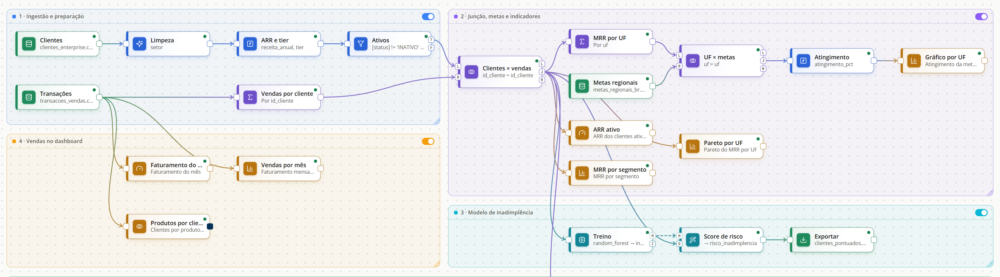
O PRO.DATA é para quem trabalha com dados no dia a dia, como analistas, controladoria, comercial e operações, e quer sair da planilha frágil sem virar programador.
Em vez de fórmulas espalhadas por várias abas, você monta um fluxo: caixas ligadas por fios, em que cada caixa faz uma coisa. Uma lê o arquivo, outra limpa, outra cruza, outra resume, outra desenha o gráfico. O fluxo fica salvo, roda de novo com dados novos e mostra o resultado de cada etapa.
| Na planilha | Com o PRO.DATA |
|---|---|
| Refazer o mesmo relatório todo mês, copiando e colando | Trocar o arquivo e clicar em Executar |
| PROCV que quebra ou some com linhas sem avisar | Join que mostra o que casou e o que ficou sem par |
| "De onde veio esse número?" | Clicar na caixa e ver os dados daquela etapa |
| Espaço invisível e vazio descobertos na reunião | Perfil de qualidade que aponta o problema antes |
| A lógica fica na cabeça de quem fez | Um desenho que qualquer um lê, e o mesmo processo em SQL para o time de dados |
| Enviar um print do gráfico | Dashboard em imagem ou em HTML, com filtros que funcionam no arquivo |
Situações comuns, e as ferramentas que resolvem cada uma. Todas aparecem no fluxo de demonstração que acompanha o programa.
Vincule a planilha da pasta da rede e monte as regras uma vez. No mês seguinte, é só clicar em Executar: o PRO.DATA percebe que o arquivo mudou e recalcula só o que depende dele.
Input Data · Formula · Summarize · Output DataClientes com vendas, metas com realizado. O Join separa o que casou do que ficou sem par de cada lado, então a linha que não encontrou correspondência aparece, em vez de sumir.
Join · Select · Data CleansingO perfil de cada coluna mostra vazios, valores distintos e espaços invisíveis. E, para explicar um total, basta clicar nas caixas e seguir o caminho do dado.
Perfil · Filtros · BrowseConsulte bancos em modo somente leitura e leia APIs, inclusive uma chamada para cada linha da sua tabela, como buscar o detalhe de cada cliente.
Consultas de banco · APIs · API LoopMonte a página com KPIs, Pareto e Venn. Baixe em imagem para o e-mail ou em HTML, que abre sem o PRO.DATA e mantém os filtros funcionando.
KPI Card · Chart · Venn · DashboardA aba SQL escreve o que foi construído e confere etapa por etapa se o código dá o mesmo resultado. O protótipo vira especificação, sem reescrever do zero.
Aba SQL · .sql e .zipPonto e vírgula, vírgula decimal e acentos de sistemas antigos são reconhecidos sozinhos. Há fórmulas para CPF, CNPJ e datas em português.
Motor colunar moderno (Polars e DuckDB). Ao executar de novo, só o que mudou é recalculado.
Roda no seu computador. Senhas no cofre do Windows e bancos em somente leitura. A rede só é usada para as fontes que você cadastra.
Indicadores e gráficos nascem no próprio fluxo e se atualizam a cada execução, sem exportar para outra ferramenta.
Erros aparecem na caixa, com o motivo. Fluxos são salvos em arquivo legível, que dá para versionar e auditar.
Cross Tab, Join, Summarize e API Loop mostram um esquema do antes e depois com os seus próprios dados.
Uma tela só, dividida em áreas com papéis claros. Todos os painéis podem ser movidos ou ocultados (veja o capítulo 12).
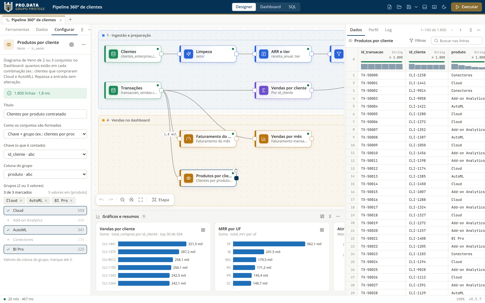
1 2 3 4 5 6Cada família de ferramentas tem uma cor, e os fios levam a cor de uma caixa até a outra. Dá para ler um fluxo de longe: verde lê e grava dados, azul prepara, roxo combina, laranja vira indicador e ciano é Machine Learning. A seta mostra o sentido em que o dado anda e, durante a execução, ele corre pelo fio até a caixa da vez.
Uma pergunta real: quanto cada estado representa no faturamento mensal? Em cinco passos, com os arquivos de exemplo que já vêm no programa.
Clique em + ao lado das abas. O canvas abre vazio.
Na aba Dados, arraste clientes_enterprise.csv para o canvas. Nasce uma caixa Input Data, e o PRO.DATA já reconheceu separador e acentos.
Em Ferramentas, arraste Summarize e ligue a saída da primeira caixa à entrada dela. Em Agrupar por, escolha uf; em Agregações, some mrr_mensal. O esquema Como funciona já mostra o que vai acontecer.
Arraste Chart, ligue ao Summarize e escolha uf como categoria e a coluna da soma como valor.
Clique em Executar. O dado corre pelos fios, cada caixa confirma com um pulso verde, e o gráfico aparece no Dashboard. Clique em qualquer caixa para ver a tabela daquela etapa.
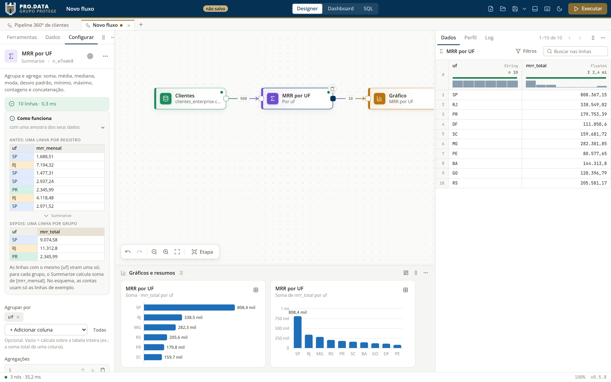
Agora veja um fluxo completo. O exemplo Pipeline 360° de clientes vem pronto, separado em etapas, e os próximos capítulos o usam nos quadros Experimente.
A primeira tela da barra superior reúne tudo o que os fluxos leem: arquivos, consultas de banco, APIs, conexões e constantes. Você cadastra uma vez e usa em quantos fluxos quiser. Cada cartão mostra a situação da fonte (ok, vinculado, falta senha, não encontrado) e em quantos fluxos ela é usada. O botão Adicionar cria qualquer uma delas.
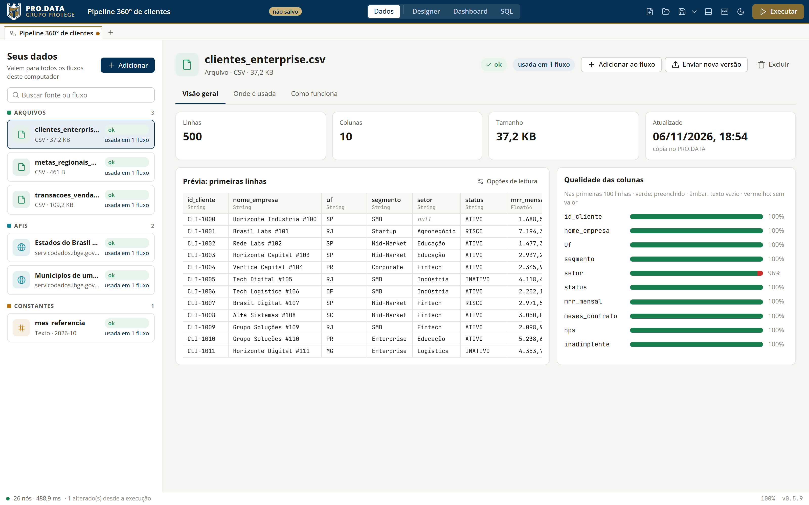
Onde é usada. A aba Onde é usada desenha a fonte ligada a cada fluxo da biblioteca, com as caixas na ordem em que o dado anda e as cores do Designer. Ela responde à pergunta que vem antes de mudar ou excluir uma fonte: o que deixa de funcionar? Clique numa caixa para abri-la no Designer. Ao excluir uma fonte em uso, o PRO.DATA lista os fluxos afetados antes. A conta inclui os fluxos da biblioteca; os salvos em outras pastas não entram.
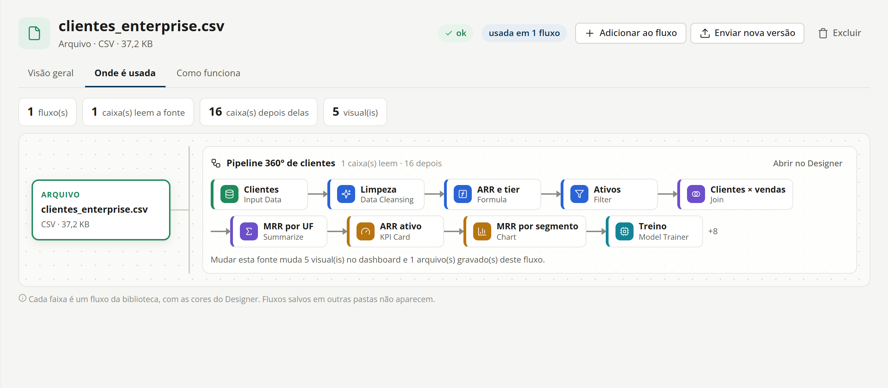
Envie arquivos pela vista Dados, em Adicionar, ou solte-os direto no canvas. Antes de usar, a prévia mostra o que foi detectado e as primeiras linhas — e qualquer ajuste aparece na hora.
Enviar ou vincular? Enviar faz uma cópia do arquivo. Para uma planilha que é atualizada todo dia numa pasta da rede ou no OneDrive, use Vincular arquivo: o PRO.DATA lê o original onde ele está, sem copiar. A cada execução, se o arquivo mudou, ele é relido e só o que depende dele roda de novo; a vista Dados e o Configurar mostram quando o arquivo foi modificado e avisam se ele foi movido ou renomeado. O PRO.DATA nunca grava no arquivo vinculado.
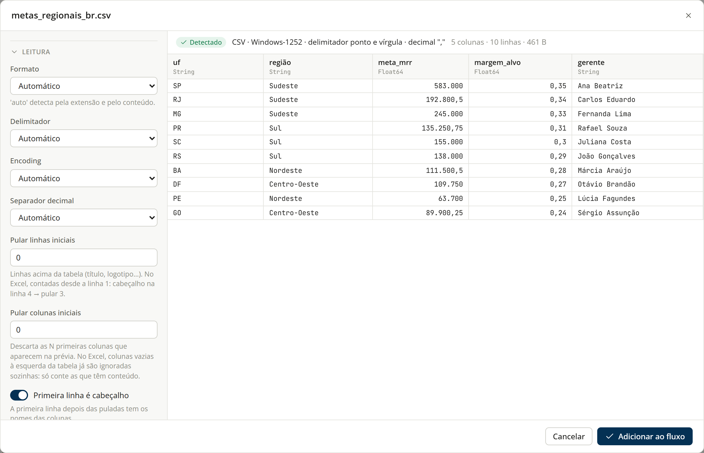
| Formato | Detalhes |
|---|---|
| CSV / TXT / TSV | Detecta separador (, ; tabulação |), codificação (UTF-8, Windows-1252, ISO-8859-1) e separador decimal. Permite pular linhas, definir valores nulos e cabeçalho. |
| Excel | .xlsx, .xls, .xlsm e .xlsb, com escolha da aba. |
| Parquet · Arrow | Formatos analíticos de alto desempenho. |
| JSON · JSON Lines | Lista de registros ou um registro por linha (detectado automaticamente). |
| Tabela digitada | A ferramenta Text Input oferece uma grade para digitar ou colar do Excel (tabelas de-para, metas, parâmetros). |
Cadastre conexões com PostgreSQL e SQL Server e teste com um clique. Depois, na própria vista Dados, crie consultas de banco: escolha uma tabela da lista ou escreva o SQL, veja a prévia e dê um nome. A consulta fica ao lado dos arquivos e é usada exatamente como eles: arraste para o canvas ou escolha no Input Data, a mesma ferramenta que lê arquivos.
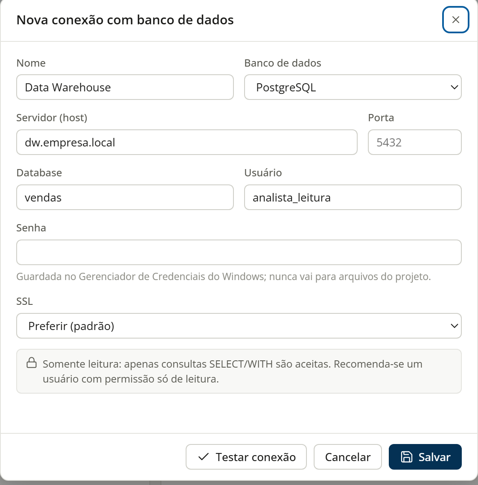
SELECT/WITH) são aceitas, e comandos que alteram dados são recusados antes de chegar ao banco. Por padrão, cada execução consulta o banco de novo; a opção "Reaproveitar resultado" evita consultas repetidas quando os dados não mudam.O mês de referência, a meta do trimestre, a taxa de câmbio do fechamento: valores que aparecem em várias fórmulas e mudam de tempos em tempos. Em vez de procurar cada fórmula, cadastre uma constante e escreva [#mes_referencia] onde precisar. Para trocar, mude num lugar só.
Compartilhadas ficam na vista Dados e valem para todos os fluxos deste computador. Ao mudar uma que outros fluxos usam, o PRO.DATA mostra o valor de antes e o novo, e lista as caixas que passam a calcular diferente.
Do fluxo ficam no arquivo do fluxo e viajam com ele. O botão Constantes, na barra do canvas, mostra as do fluxo e as compartilhadas que ele usa.
Cada constante tem um tipo: texto, número ou data. No editor de fórmula, o botão Constante insere a referência, que tem cor própria. Ela também vale no valor do Filter básico, no nome do arquivo do Output Data e nos parâmetros fixos de uma API.
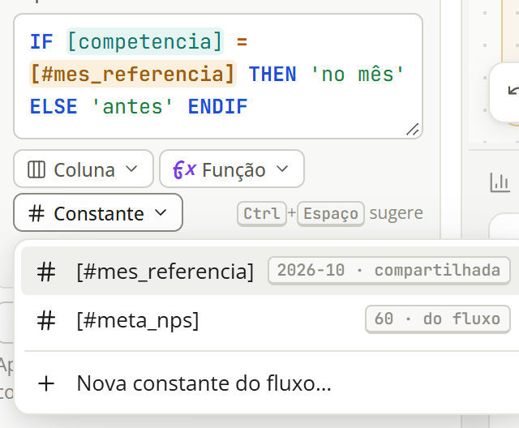
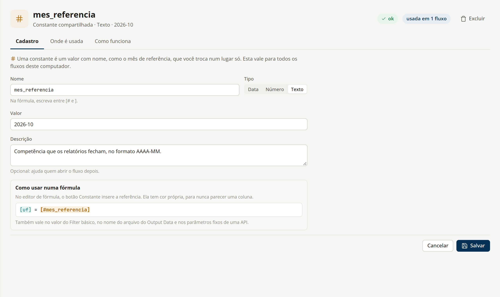
metas_regionais_br.csv.Uma API é um endereço na internet que responde com dados, em vez de uma página. O PRO.DATA faz a chamada e transforma a resposta em tabela, pronta para cruzar com o resto.
| Tipo de API | Como é | Exemplo | No fluxo |
|---|---|---|---|
| Chamada direta | O endereço é sempre o mesmo | Todos os estados | Input Data |
| Com variável | O endereço tem um espaço a preencher | Os municípios de um estado | API Loop, ligado a uma tabela |
A variável é reconhecida sozinha quando o nome está entre chaves. Se você colar um endereço com um valor real, como …/estados/SP/municipios, troque o valor por {sigla}. Se a documentação escrever :sigla ou <sigla>, a tela avisa e converte com um clique.
Na vista Dados, em Adicionar > Nova API, escolha um exemplo pronto ou cole o endereço.
O que será enviado mostra o pedido sendo montado, com a credencial sempre oculta.
A aba Parâmetros separa variáveis de parâmetros fixos. Autenticação aceita token, chave, usuário e senha ou OAuth 2. Páginas lê respostas divididas em partes.
A resposta real aparece ao lado da tabela que ela gerou.
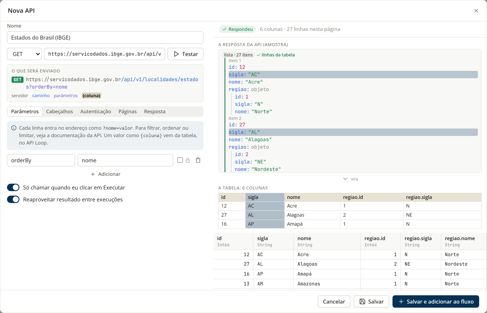
Cada API tem os seus, quase sempre opcionais, e a lista está na documentação dela. Não existe uma lista única.
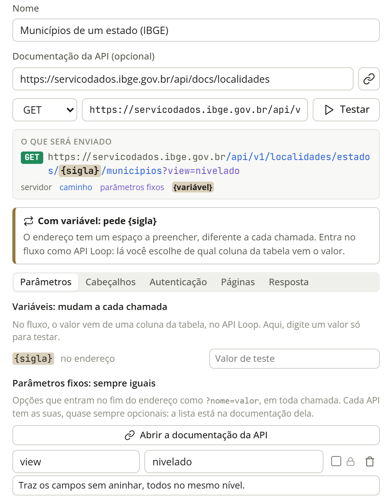
Com uma API que tem variável, a caixa API Loop faz uma chamada para cada linha da tabela de entrada e junta as respostas numa tabela só. A entrada pode vir de outra API: a lista de estados alimenta os municípios de cada um.
Ligue a tabela e, em De onde vem cada variável, escolha a coluna:
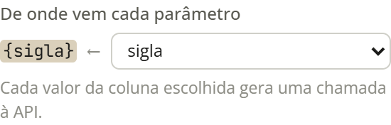
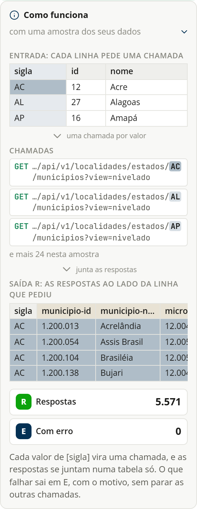
31 ferramentas em cinco famílias. Algumas têm mais de uma saída — por exemplo, o Filter separa o que atende à condição (T) do que não atende (F), e o Join separa o que só existe à esquerda (L), o que casou (J) e o que só existe à direita (R).
| Ferramenta | Para que serve |
|---|---|
| Entrada e saída | |
| Input Data | Lê qualquer fonte da vista Dados: arquivos (com detecção automática de formato) consultas de banco ou APIs. |
| API Loop | Chama uma API para cada linha da tabela e junta as respostas, com as falhas numa saída própria. |
| Text Input | Tabela pequena digitada ou colada (de-para, metas). |
| Browse | Ponto de inspeção para conferir os dados no meio do fluxo. |
| Output Data | Exporta para Excel, CSV, Parquet, JSON ou Arrow, na pasta que você escolher, com um rótulo de confidencialidade. No Excel, ligue várias tabelas na mesma caixa: cada uma vira uma planilha. Se o arquivo já existe, pergunta: substituir ou criar um novo. |
| Preparação | |
| Select | Escolhe, renomeia, reordena (arrastando) e muda o tipo das colunas. Entende números no padrão brasileiro, datas como 29/10/2026 e sim/não, e avisa quantos valores não converteram. |
| Filter | Separa linhas por condição, com modo simples ou expressão. |
| Formula | Cria colunas calculadas ou altera colunas existentes (SE/ENTÃO, texto, matemática, datas). |
| Multi-Row Formula | Olha outras linhas, com receitas prontas: preencher para baixo, diferença, variação %, valor anterior, próximo valor e "mudou?". Tem o próprio Ordenar por. |
| Data Quality | Confere regras prontas (não vazio, sem duplicados, CPF, CNPJ, e-mail, faixa de número, data, lista de valores ou uma fórmula sua) e separa o que passou (P) do que falhou (F), com o motivo de cada falha. Veja o capítulo 7. |
| Data Cleansing | Remove espaços, padroniza maiúsculas e trata vazios em um passo. |
| Unique | Separa a primeira ocorrência de cada chave das duplicadas. |
| Sort · Sample | Ordena por uma ou mais colunas (o order by); tira amostras (primeiras, últimas, aleatórias, percentual). |
| Text To Columns | Divide um texto por um separador em novas colunas ou linhas (ex.: "SP - São Paulo"). |
| Record ID · Running Total | Numera as linhas; calcula soma acumulada, recomeçando a cada grupo se quiser. |
| Combinar e transformar | |
| Join | Cruza duas tabelas por uma ou mais chaves, com saídas L, J e R. Dá para escolher se o J mantém as chaves dos dois lados, só a da esquerda ou só a da direita, e escolher, renomear, converter e reordenar as colunas do J ali mesmo, como num Select. O Configurar mostra quantas linhas saem em cada uma. |
| Summarize | Agrupa e calcula soma, média, mediana, moda, desvio padrão, contagens, mínimo e máximo. Só oferece o que serve para o tipo da coluna: texto não soma. O Configurar mostra um esquema do antes e depois. |
| Union | Empilha tabelas, alinhando colunas pelo nome ou posição. |
| Cross Tab · Transpose | Tabela dinâmica (valores de uma coluna viram colunas) e o inverso (colunas viram linhas). O Configurar desenha o antes e o depois com os seus dados. |
| Append Fields | Anexa uma tabela pequena (parâmetros, taxa do mês) a todas as linhas. |
| SQL | Para quem conhece SQL: consulta livre sobre os dados do fluxo. |
| BI e indicadores | |
| Chart | Colunas, barras, linha, rosca, empilhado, agrupado, 100%, área, Pareto, funil e dispersão. |
| KPI Card | Big number com variação contra meta ou período anterior e tendência, ou medidor. |
| Venn · Table | Interseções de 2 ou 3 grupos (ex.: clientes por produto) e tabela com totais e cores por faixa. |
| Machine Learning | |
| Train/Test Split | Divide os dados em treino e teste. |
| Model Trainer · Predictor | Treina modelos de classificação ou regressão e aplica a novos dados, com acurácia medida em dados de validação. |
Clique na caixa e a aba Configurar abre ao lado, com um formulário só dela. Na direita, a tabela já mostra o resultado — no exemplo, as três saídas do Join com a contagem de cada uma.
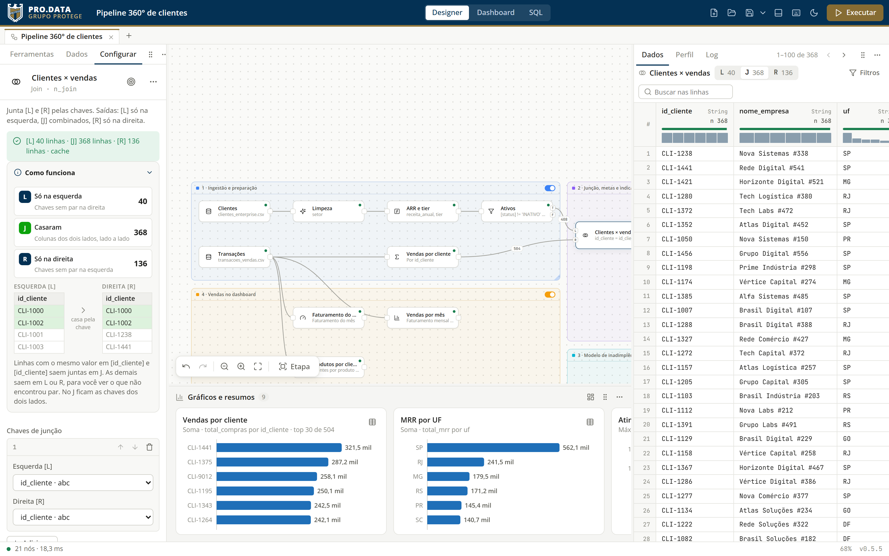
Cross Tab, Transpose, Join e Summarize são conceitos que confundem quem não trabalha com dados todo dia. No Configurar, essas caixas mostram um esquema do que acontece com a tabela, montado com as colunas escolhidas e uma amostra dos seus dados. Passar o mouse num valor destaca para onde ele vai; no Join, clicar em L, J ou R abre aquelas linhas.
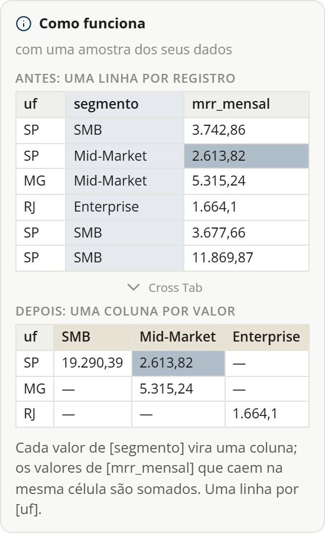
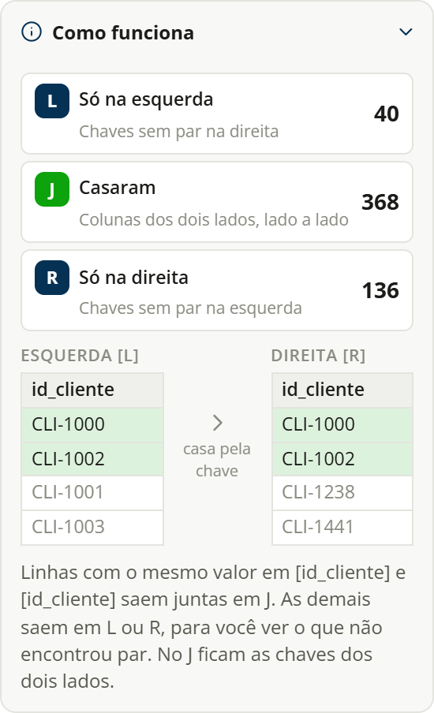
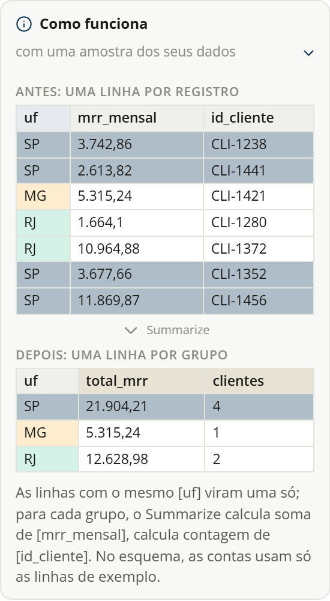
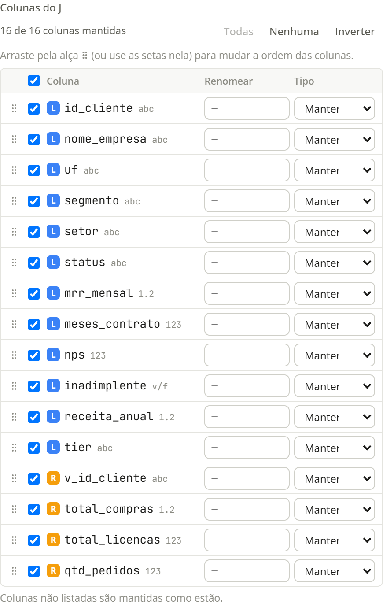
As caixas Formula e Filter têm um editor feito para quem não programa:
[ e ele lista as colunas. Enter aceita; Ctrl+Espaço mostra tudo.Average([jan], [fev], [mar]), Sum, Median, Mode (moda), StdDev (desvio padrão), Max, Min. Diferente é !=. Para juntar textos use Concat.ToNumberBR('1.234,56'), FormatNumber([valor], 2) → 1.234,56, DigitsOnly para CPF e CNPJ, RemoveAccents, e datas em português: DateAdd([data], 1, 'mês'), MonthName, WeekdayName.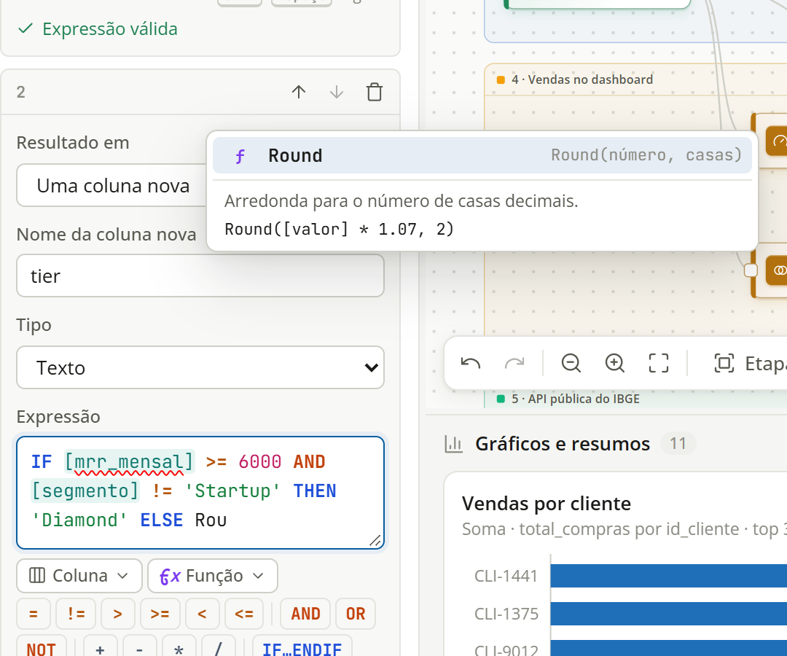
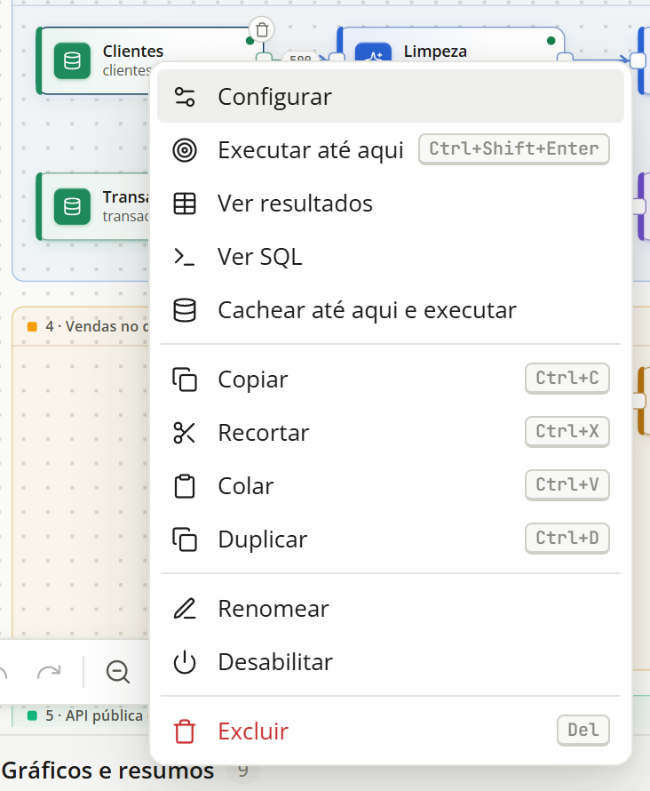
A Multi-Row Formula compara uma linha com as vizinhas. Você não precisa escrever nada: escolha o que quer fazer, escolha a coluna, e a fórmula sai pronta, à vista.
[Row-1:coluna] e [Row+1:coluna].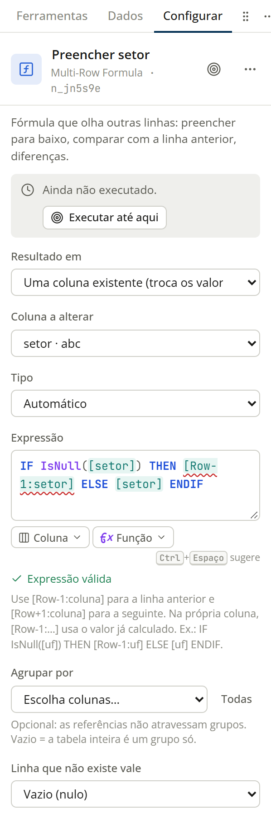
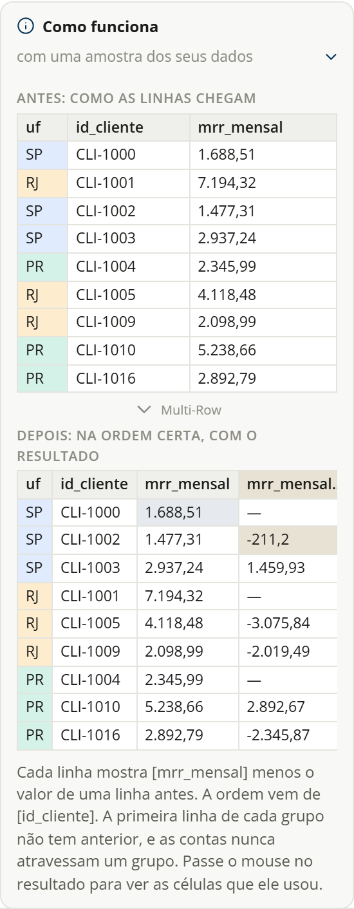
Com o formato Excel, o Output Data oferece uma entrada nova sempre que a anterior é ligada, até 8. Cada tabela vira uma planilha do mesmo arquivo, e o Configurar dá o nome de cada uma.
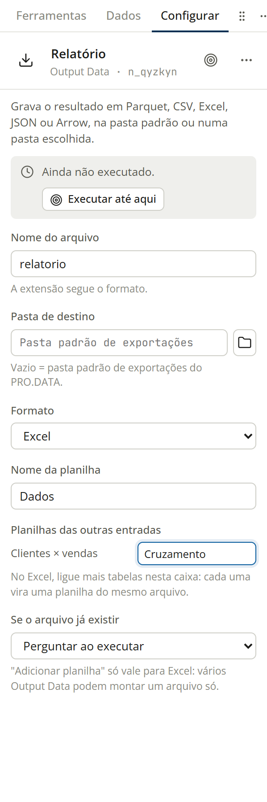
Um CPF inválido, um setor em branco ou um estado fora da lista chegam ao relatório sem ninguém ver. A ferramenta Data Quality confere regras antes de o dado seguir e separa o que passou do que falhou, com o motivo.
Cada cartão mostra um exemplo do que passa (✓) e do que falha (✗). Clique para adicionar a regra e escolha a coluna. O número no cartão diz quantas vezes ela já está na caixa. Só aparecem as colunas que servem: a faixa de número oferece só números.
| Regra | Confere |
|---|---|
| Não vazio | Preenchido. Espaços em branco contam como vazio. |
| Sem duplicados | Cada valor uma vez só, numa coluna ou na combinação de várias. Todas as cópias falham. |
| CPF · CNPJ | Dígitos verificadores, com ou sem máscara. Aceita o CNPJ com letras, que começa a valer em 2026. |
| Formato de endereço de e-mail. | |
| Número na faixa | Entre um mínimo e um máximo, ou só um dos dois. |
| Data válida | Data que existe, entre duas datas ou que não está no futuro. |
| Valor permitido | Está na lista digitada ou numa coluna de outra tabela, diferenciando ou não maiúsculas. |
| Fórmula livre | Qualquer condição na linguagem de fórmula, com a sua mensagem. |
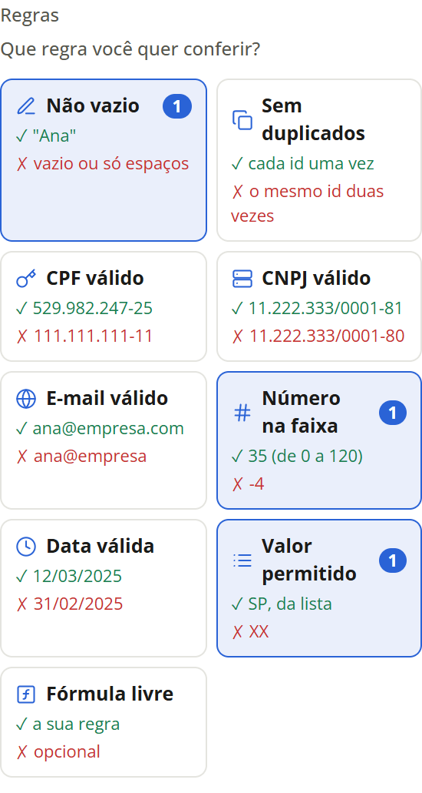
Em De onde vem a lista, escolha um de dois jeitos:
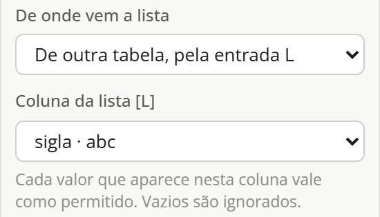
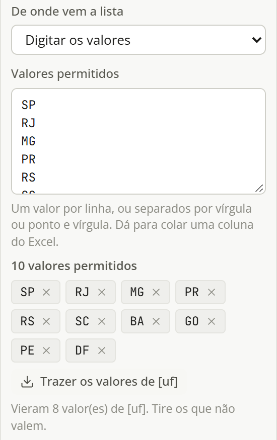
P leva as linhas que passaram em todas as regras e segue no fluxo. F leva as que falharam em pelo menos uma, com duas colunas a mais: regra e motivo, como "Vazio em [setor]". Ligue o F a um Output Data para mandar a lista de correções a quem cuida do cadastro.
Depois de executar, a caixa ganha no canvas um selo vermelho com quantas linhas falharam, e o esquema Como funciona mostra as contas da última execução, regra por regra. As células reprovadas ficam em vermelho na amostra.
Para as regras de formato (CPF, e-mail, data…), o vazio passa: use Não vazio para cobrar o preenchimento. Assim cada falha tem um motivo só.
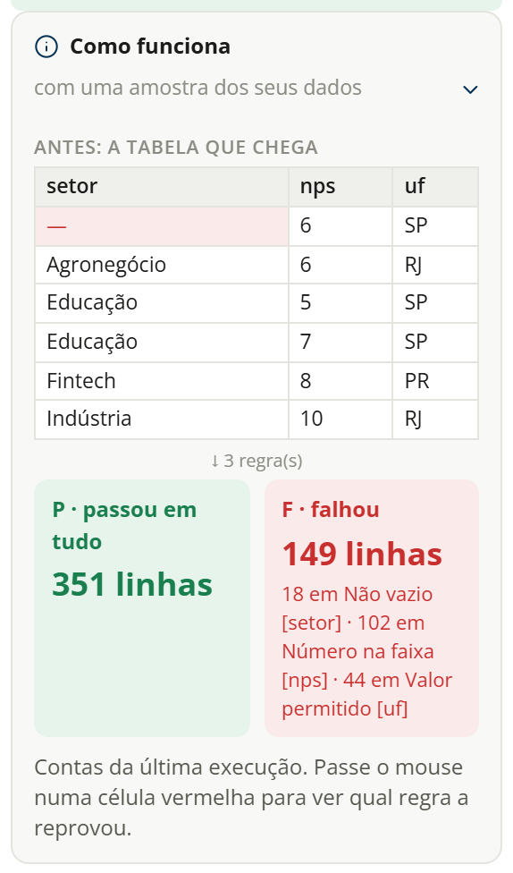
setor.Cada caixa guarda o resultado da última execução. Clique nela — ou em uma de suas saídas — e a tabela mostra os dados correspondentes.
Para investigar sem mexer no fluxo, use o botão Filtros da tabela, o funil no cabeçalho de cada coluna ou o botão direito sobre uma célula ("Filtrar = valor", "Excluir valor").
As condições viram etiquetas que você edita ou remove, e o contador mostra quantas linhas sobraram. Esses filtros não alteram o fluxo salvo, e o perfil passa a considerar só as linhas filtradas.
A aba Perfil descreve cada coluna: percentual preenchido, vazio e nulo, valores distintos, mais frequentes e estatísticas (mínimo, média, mediana, máximo).
Espaços invisíveis aparecem: células só com espaços mostram vazio (espaços), espaço sobrando no início ou no fim aparece como ␣ e o cabeçalho da coluna traz um aviso com as contagens — "SP " não casa com "SP" num Join.
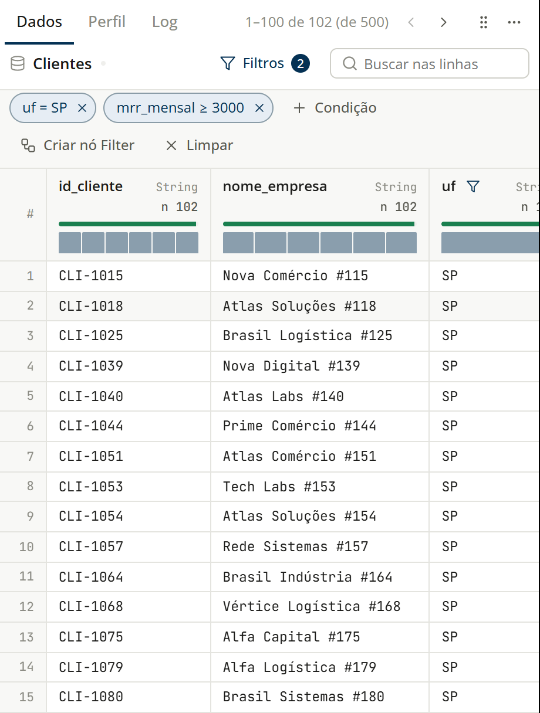
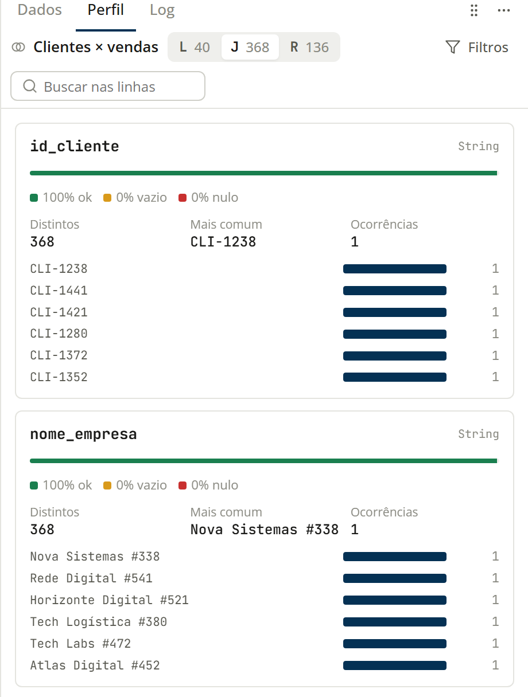
uf por SP.Os números nascem dentro do fluxo: as caixas de BI calculam e o Dashboard mostra. Quando os dados mudam, basta executar de novo.
| Caixa | O que publica |
|---|---|
| KPI Card | Um número em destaque (soma, média, contagem…). Opcionalmente compara com uma meta ou com o período anterior (dia, semana, mês, trimestre ou ano), mostrando a variação com seta verde ou vermelha conforme "maior é melhor" ou "menor é melhor", e um minigráfico da tendência. Também pode virar um medidor. |
| Chart | Colunas, barras, linha e rosca; com uma 2ª dimensão, colunas empilhadas, agrupadas ou 100%, várias linhas e áreas; e ainda Pareto, funil e dispersão. |
| Venn | Quantos estão em cada combinação de 2 ou 3 grupos — por exemplo, clientes que compraram Cloud, AutoML ou os dois. |
| Table | Uma tabela com as colunas escolhidas, ordenação, linha de totais e cores por faixa de valor. |
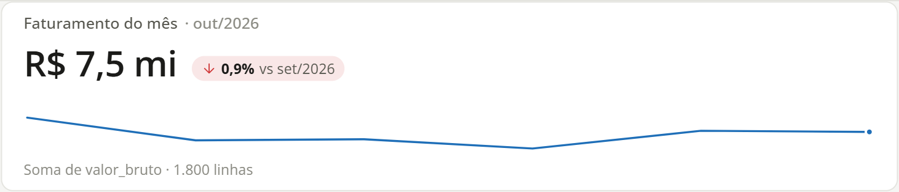
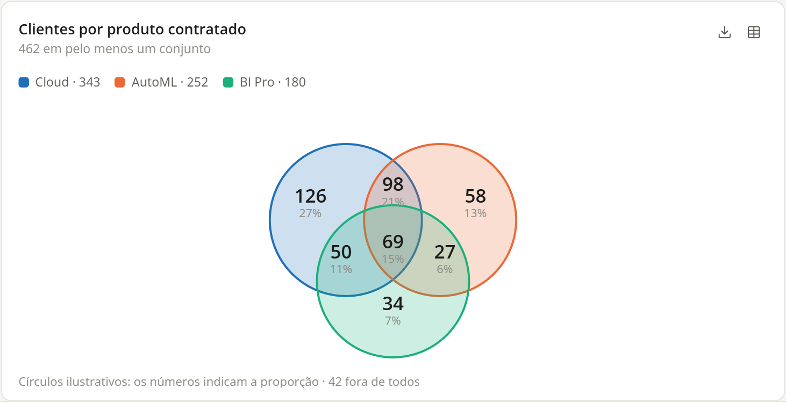
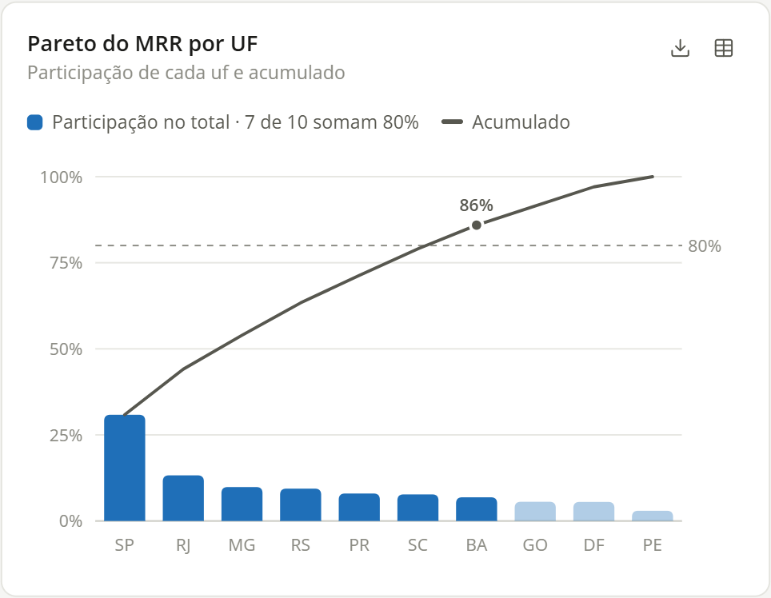
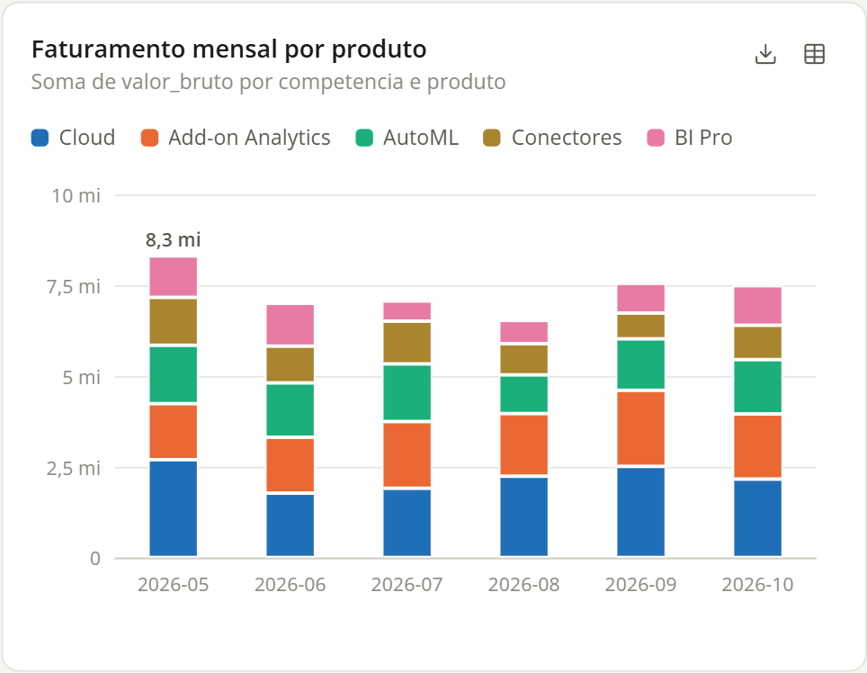
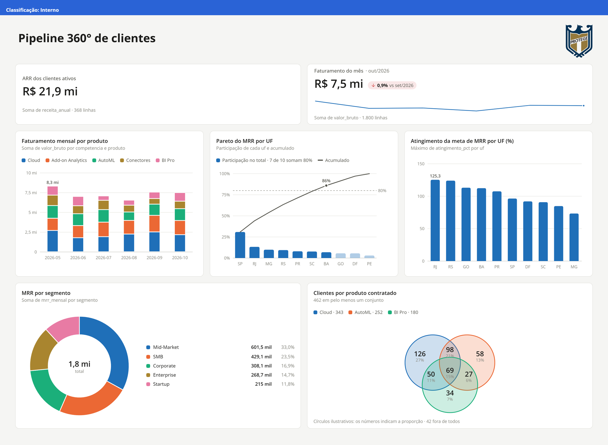
O fluxo define o que mostrar; o dashboard define onde e como. Mudar cores ou posições não executa nada de novo.
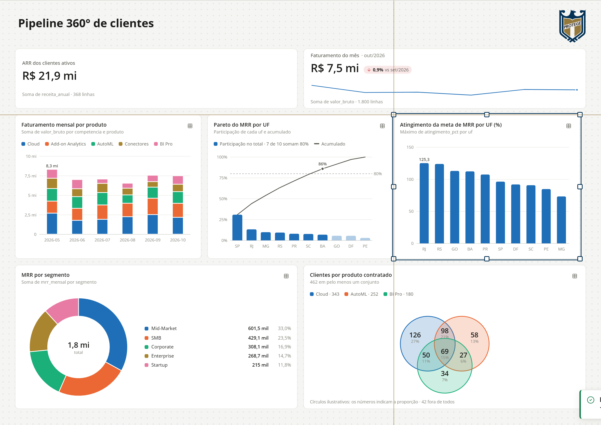
Clique em Editar layout. A página vira um canvas: arraste os visuais, redimensione pelas alças e eles se encaixam numa grade, com guias quando se alinham a outro item ou ao centro da página (segure Alt para posicionar livremente). Shift+arrastar seleciona vários; o botão direito alinha, distribui e muda a camada; Delete tira o visual da página sem apagar a caixa do fluxo — ele fica em Fora da página e volta com um clique.
Título (empurra o conteúdo para baixo), texto, imagem PNG/JPG/SVG até 1 MB, o logo do Grupo Protege, retângulos de fundo e linhas divisórias.
16:9, A4 paisagem, A4 retrato ou altura livre, com cor de fundo. Se os visuais não couberem, a página cresce e o PRO.DATA avisa.
Gera um PNG em alta resolução da página — ou de um visual só, pelo botão do cartão — no tema claro ou escuro que estiver na tela.
O botão Organizar mostra os seus visuais em seis arranjos — Automático, KPIs no topo com 2 ou 3 colunas, Destaque, KPIs na lateral e Relatório — e aplica o escolhido.
Textos, imagens e o que não estiver selecionado ficam onde estão; um Ctrl+Z desfaz.
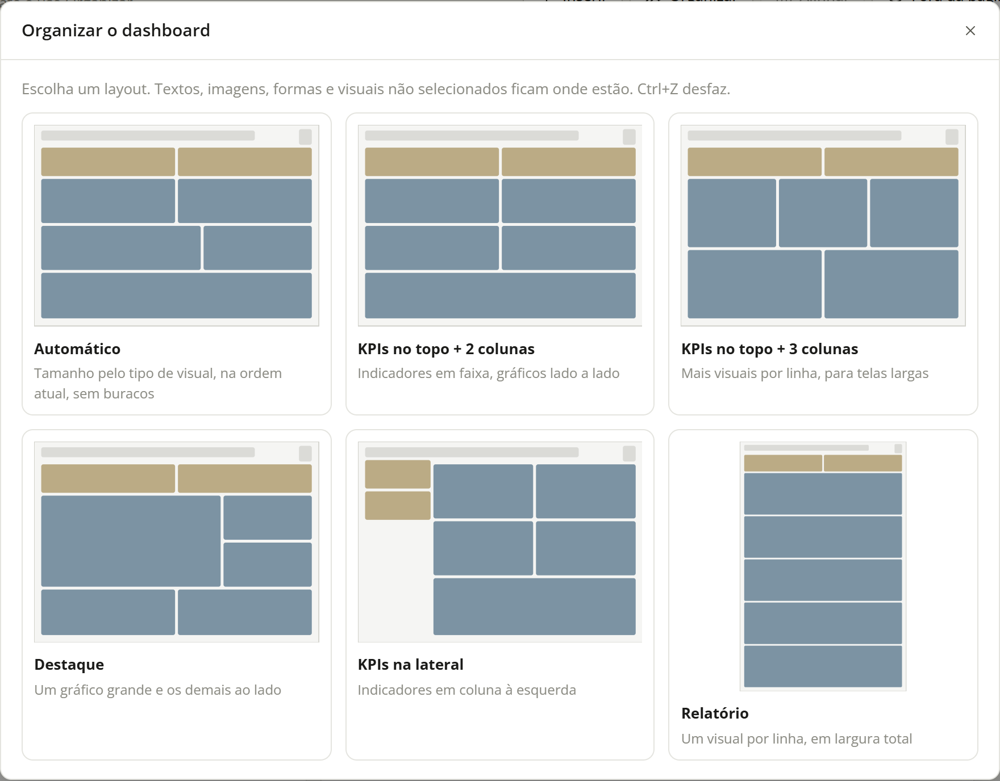
Com um item selecionado, o painel Formato ajusta título, subtítulo, fundo, borda, cantos e sombra; os nomes na legenda e nas categorias (ex.: SP → São Paulo) e a posição da legenda; cores (paleta da marca, paleta alternativa, uma cor ou uma cor por categoria — com aviso quando a cor some no fundo); rótulos de dados, formato dos números, legenda e eixos; e, em tabelas e KPIs, cores por faixa (bom, atenção, crítico, sempre com ícone).
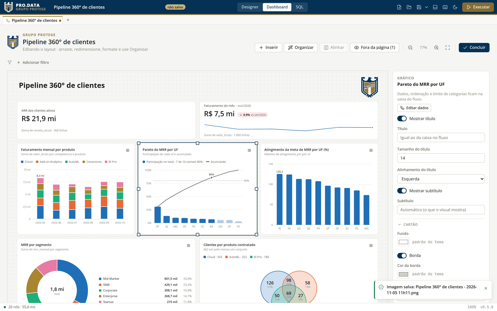
Em Adicionar filtro, escolha uma coluna: a faixa no topo mostra seus valores como botões ou, em número e data, um controle deslizante. Ou clique direto numa barra ou fatia de um gráfico: a página filtra por aquele valor, Ctrl+clique soma outros, e clicar de novo tira. O gráfico clicado mantém as demais categorias apagadas, para dar para trocar. O filtro vale para todos os visuais cuja tabela tem aquela coluna, sem executar o fluxo de novo. Quem não tem a coluna não muda e mostra um aviso discreto, Sem filtro. A escolha fica salva no fluxo e aparece no alto da imagem PNG.
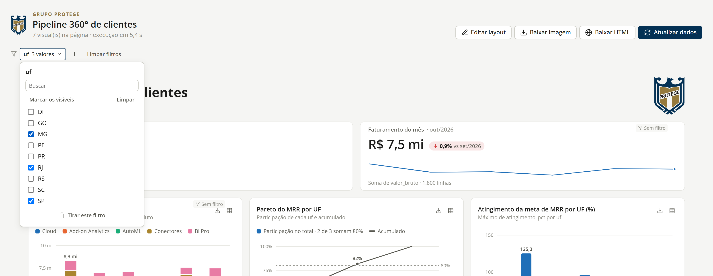
Baixar HTML gera um arquivo só, que abre em qualquer navegador, sem o PRO.DATA e sem internet, com os detalhes ao passar o mouse e os filtros funcionando. Para isso, o arquivo leva as colunas que os visuais e os filtros usam, e nada além delas. Antes de salvar, a tela mostra quanto dado vai dentro. Com senha, obrigatória nos rótulos Confidencial e Restrito, os dados ficam cifrados até alguém digitá-la.
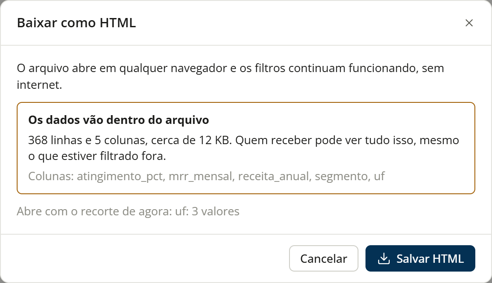
uf.O PRO.DATA é onde você constrói rápido e experimenta. A aba SQL, ao lado de Designer e Dashboard, mostra o que foi construído escrito em SQL e confere se o código dá o mesmo resultado, para que levar a lógica ao lake seja uma revisão, não uma reescrita.
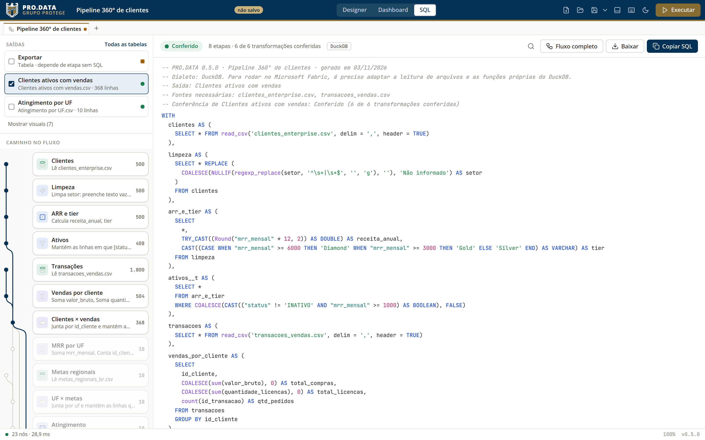
Cada saída do fluxo tem o próprio código, só com o que existe entre as entradas e ela: se a saída usa apenas o J de um Join, as saídas L e R nem aparecem. Clique numa saída para ver o caminho aceso na trilha. Marque outras saídas para juntar tudo num código só, em que as etapas comuns aparecem uma vez, com a marca "usada por 2".
Caixas sem tradução, como as de Machine Learning, ficam em vermelho, com a etiqueta "sem SQL".
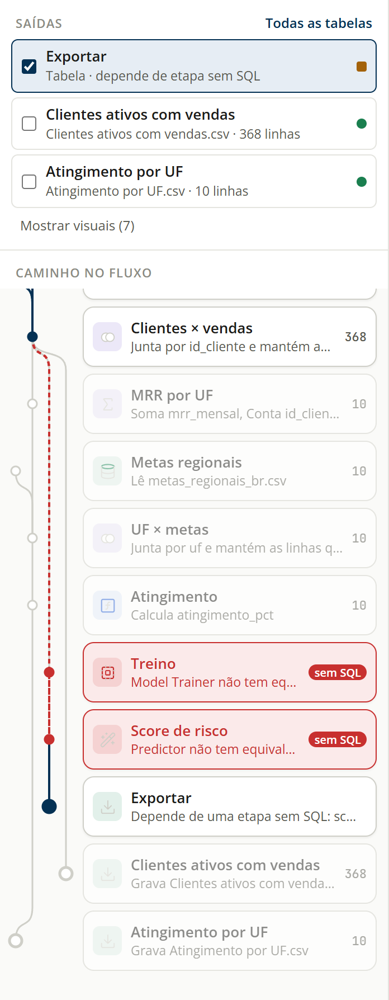
Copiar SQL copia o código que está na tela. Baixar gera um arquivo .sql, ou um .zip com um arquivo por saída, mais o unificado, pronto para mandar pelo Teams. Cada arquivo abre com um cabeçalho que diz o que ele produz, de que fontes precisa, o que foi conferido e o que ficou de fora.
O arquivo leva só a lógica. Dados, senhas e caminhos de pastas ficam de fora; a exceção é o Text Input, cujos valores digitados fazem parte do código, e o cabeçalho avisa. As constantes também entram já com o valor, e o cabeçalho lista as usadas: para mudar uma, gere o código de novo.
O botão Fluxo completo mostra o seu desenho inteiro com o caminho aceso. No Designer, o botão direito numa caixa traz Ver SQL.
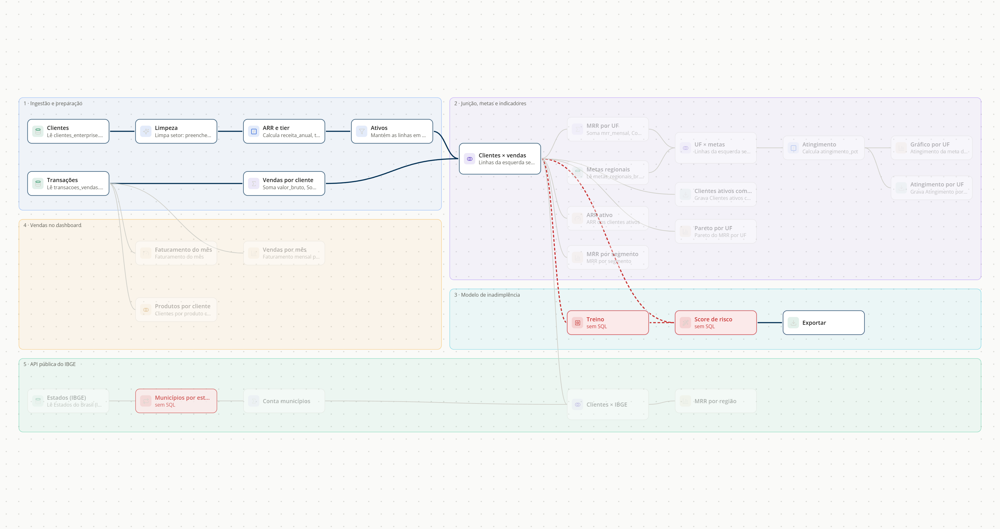
Agrupe as etapas do fluxo em caixas com nome, descrição e cor (paleta Organização, botão Etapa ou tecla G). Arrastar o título move a caixa junto com tudo o que está dentro. Cada caixa tem um interruptor: desligada, as caixas de dentro deixam de executar — útil para pausar uma parte do processo sem apagar nada.
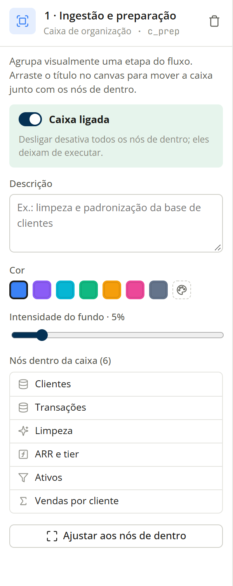
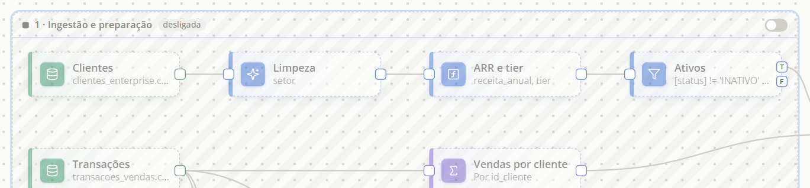
Os três painéis — ferramentas/configuração, resultados e gráficos — podem ser arrastados pela alça ⠿ para a esquerda, a direita ou embaixo, ou ocultados. O botão Painéis, na barra superior, reexibe e restaura o padrão. O arranjo é lembrado.
Telas menores: a interface fica compacta sozinha em monitores menores, e no menu Painéis dá para fixar a densidade.
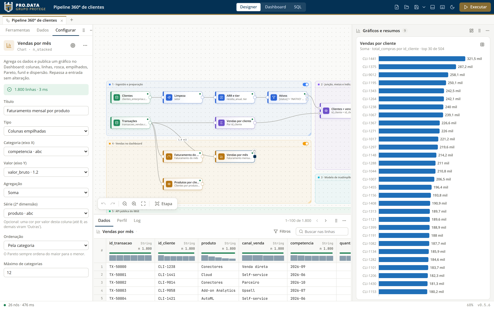
Cada fluxo aberto ganha uma aba logo abaixo da barra superior, com seu próprio resultado e seu próprio desfazer. Um ponto laranja indica alterações não salvas. Ao fechar uma aba — ou o programa — com alterações, o PRO.DATA pergunta: Salvar, Não salvar ou Cancelar. As abas salvas reabrem sozinhas na próxima vez.
Salvar guarda o fluxo na biblioteca do PRO.DATA. Salvar como… (Ctrl+Shift+S) grava um arquivo .prodata.json na pasta que você escolher — do projeto, da rede ou do OneDrive — e daí em diante Ctrl+S salva nele. Abrir arquivo… abre fluxos de qualquer pasta, e os recentes ficam listados. No Output Data, o campo Pasta de destino abre o seletor de pastas do Windows; depois de executar, o botão "Mostrar na pasta" leva até o arquivo gerado.
Consultas a banco e arquivos grandes não precisam ser lidos a cada ajuste. Clique com o botão direito numa caixa e escolha Cachear até aqui e executar: só o resultado dela fica guardado (inclusive depois de fechar o programa), e por isso as caixas anteriores deixam de executar — aparecem douradas e tracejadas, com "Pulada pelo cache", e a barra de status conta quantas foram puladas. O aviso da caixa lista as puladas e tem o botão Mostrar as puladas. Mudou algo antes do ponto, ou um arquivo de origem foi atualizado? O cache se refaz sozinho. Para fontes de banco, que só mudam por dentro, escolha em Renovar "também todo dia" ou "a cada hora". Para forçar uma nova leitura, use Atualizar cache.
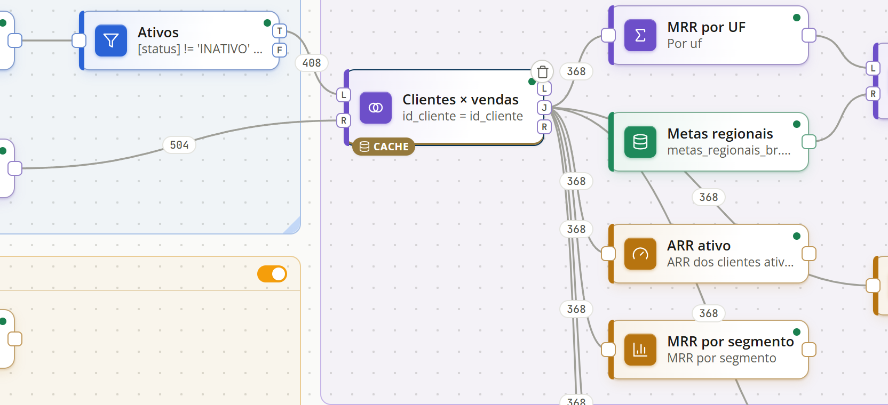
Também disponíveis: tema claro e escuro, desfazer/refazer, zoom e "ajustar à tela".
O PRO.DATA roda inteiramente no seu computador e funciona offline. A única saída para a rede é a que você cadastra: bancos e APIs. O programa não envia nada por conta própria.
Senhas de banco ficam no Gerenciador de Credenciais do Windows, criptografadas pelo sistema. Nunca aparecem em arquivos, fluxos ou mensagens de erro.
Tokens e senhas ficam no cofre do Windows e nunca viajam por http para fora, nem seguem para outro servidor. APIs públicas funcionam sem configuração; rede interna, só com a lista da TI. POST e API Loop não rodam sozinhos ao abrir um fluxo.
Público, Interno, Confidencial ou Restrito, com uma dica do que cada um faz. No HTML, os dois últimos exigem senha. A imagem e o Excel não têm como levar senha: saem marcados, e a dica avisa.
logs\exportacoes.log guarda quando, quem, o arquivo, o rótulo, quantas linhas e colunas, e se teve senha. Nunca os dados.
Comandos que alteram dados (DELETE, UPDATE, DROP…) são recusados antes de chegar ao banco. No PostgreSQL, a sessão é aberta em modo somente leitura.
Um fluxo que veio de fora abre em modo protegido: nada executa até você conferir e confiar. Fórmulas e a caixa SQL não acessam arquivos nem a internet. Fora da pasta de dados, o programa só grava onde você mandar.
Fluxos, arquivos e conexões ficam em %LOCALAPPDATA%\PRO.DATA e sobrevivem a atualizações e à desinstalação.
Fluxos são salvos em JSON legível — dá para versionar, revisar e auditar cada regra aplicada aos dados.
Ao abrir um fluxo que não foi criado nem salvo neste computador (recebido por e-mail, baixado ou mudado por fora), o PRO.DATA não executa nada. Uma faixa mostra o que o fluxo lê, calcula e grava; clique num item para ver a caixa. Dá para olhar e editar à vontade. Executar só depois de Confiar e executar, e o PRO.DATA lembra da escolha enquanto o arquivo não mudar.
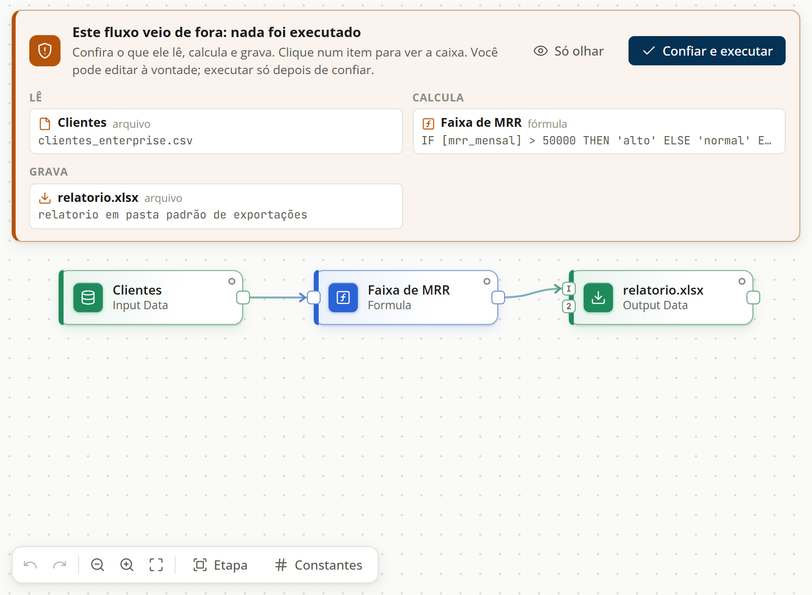
A lista fica em %ProgramData%\PRO.DATA\politica.json, que exige administrador para alterar. Aceita nomes, curingas, endereços e faixas. Sem o arquivo, nenhum destino interno é chamado, e as APIs públicas continuam funcionando.
PRO.DATA-0.6.0-setup.exe (142 MB). Instala só para o seu usuário, sem pedir administrador, cria atalho no Menu Iniciar e aparece em Aplicativos para desinstalar.
PRO.DATA-0.6.0-portable.zip (225 MB). Descompacte e abra PRO.DATA.exe. Nada é instalado — ideal para testar.
Uma tela com o escudo aparece no mesmo instante e mostra cada passo da abertura (motor de dados, servidor local, janela). Na primeira vez depois de instalar, o antivírus pode deixar a abertura mais lenta.
| Item | Requisito |
|---|---|
| Sistema | Windows 10 ou 11, 64 bits. |
| Componentes | WebView2 e .NET Framework 4.x — já presentes no Windows 11 e no Windows 10 atualizado. Não é preciso instalar Python. |
| Espaço em disco | Cerca de 600 MB para o programa, mais o tamanho dos seus dados. |
| Memória | Os dados são processados em memória: reserve RAM compatível com o tamanho das suas tabelas (como regra prática, 3 a 5 vezes o tamanho dos arquivos). |
Pelo Menu Iniciar ou pelo atalho. Na primeira vez o Windows pode exibir "Editor desconhecido" (veja o capítulo 15): clique em Mais informações → Executar assim mesmo.
O fluxo de demonstração já vem pronto. Clique em Executar, clique nas caixas, abra o Dashboard e siga os quadros Experimente deste guia.
Siga o capítulo 3 com um arquivo seu: envie na vista Dados e arraste para o canvas.
O que esta versão faz, o que não faz e onde ela tem limites — para você decidir com clareza.
| Limitação | O que significa na prática |
|---|---|
| Volume de dados | As tabelas são carregadas inteiras na memória do computador. O limite prático depende da RAM disponível; bases muito grandes (dezenas de milhões de linhas) ainda não foram validadas e podem exigir uma máquina com mais memória. |
| Modelos de ML | Ficam em memória e são treinados novamente quando o programa é reaberto (sem impacto no resultado, só no tempo da primeira execução). |
| Aviso do Windows | O instalador ainda não é assinado digitalmente; por isso o SmartScreen mostra "Editor desconhecido" na primeira execução. |
| Visuais com muitos dados | A dispersão desenha até 2.000 pontos e avisa; gráficos mostram até 50 categorias e 8 séries, com o resto em "Outros". No Venn de 3 grupos, os círculos são ilustrativos. |
| Atalho | Ação |
|---|---|
| Ctrl+Enter | Executar o fluxo (com Shift: só até a caixa selecionada) |
| Ctrl+S · Ctrl+Shift+S · Ctrl+O | Salvar · salvar como · abrir fluxo |
| Ctrl+C · Ctrl+X · Ctrl+V | Copiar · recortar · colar caixa ou etapa |
| Ctrl+Z · Ctrl+Shift+Z | Desfazer · refazer |
| Ctrl+D · Delete | Duplicar · excluir a seleção |
| G · F | Nova caixa de organização · ajustar à tela |
| Shift+clique · Ctrl+A · ? | Selecionar várias caixas · todas · lista de atalhos |
| Ctrl+Espaço | Sugestões no editor de fórmulas |
| Duplo clique no canvas | Adicionar ferramenta no ponto clicado |
| Dashboard, modo Editar: setas · Shift+setas | Mover a seleção 1 px · 8 px (Alt ao arrastar solta o encaixe) |
| Dashboard, modo Editar: Ctrl+C/V/D · Delete | Copiar, colar, duplicar textos e imagens · tirar da página |
Não. Tudo é feito por arrastar, ligar e preencher formulários. Quem conhece SQL ou fórmulas tem recursos extras, mas eles são opcionais.
Não. O PRO.DATA roda no seu computador e funciona sem internet. A rede só é usada para as fontes que você cadastrar, como um banco ou uma API. O exemplo do IBGE só chama a internet quando você clica em Executar.
Não. As conexões são somente leitura; comandos que alteram dados são bloqueados.
Envie o arquivo novo com o mesmo nome (o PRO.DATA pergunta se deve substituir) e clique em Executar. Se a planilha é atualizada sozinha numa pasta, use Vincular arquivo: basta clicar em Executar.
Não sem perguntar. Se o arquivo de saída já existe, ao clicar em Executar o PRO.DATA pergunta: substituir, criar um novo com data e hora no nome, ou (no Excel) adicionar a planilha. Dá para lembrar a escolha na caixa. Ao abrir o programa, essas exportações esperam o seu Executar.
A caixa com problema fica vermelha e explica o motivo na aba Configurar; as caixas seguintes aparecem como "não executado". A aba Log lista tudo. Se o programa não abrir, o registro fica em %LOCALAPPDATA%\PRO.DATA\logs.
Sim. Use Salvar como… e escolha a pasta (rede, OneDrive, projeto). O arquivo é um JSON legível; quem abrir em outro computador precisa ter os mesmos arquivos e consultas na vista Dados. As constantes vão junto: as do fluxo, e o valor das compartilhadas que ele usa.
Ele veio de fora e abriu em modo protegido (capítulo 13). Confira na faixa o que ele lê, calcula e grava, e clique em Confiar e executar.
Peça à TI para incluir o servidor na lista de APIs internas (capítulo 13). APIs públicas não precisam de nada.
Sim. Envie o arquivo .prodata.json junto com o contexto-ia.md, publicado com cada versão. Ele ensina a IA a mexer no fluxo; depois, é só salvar a resposta e abrir no programa. Confira o resultado, e lembre que o fluxo mostra nomes de colunas e fórmulas, além dos dados digitados em Text Input.
No Dashboard, Baixar imagem gera um PNG em alta resolução, pronto para o e-mail ou a apresentação. Baixar HTML gera um arquivo que abre em qualquer navegador, com os filtros funcionando; a tela avisa quais dados vão dentro dele.
Não. Fluxos, arquivos e conexões ficam na sua pasta de dados e continuam lá para uma futura reinstalação.